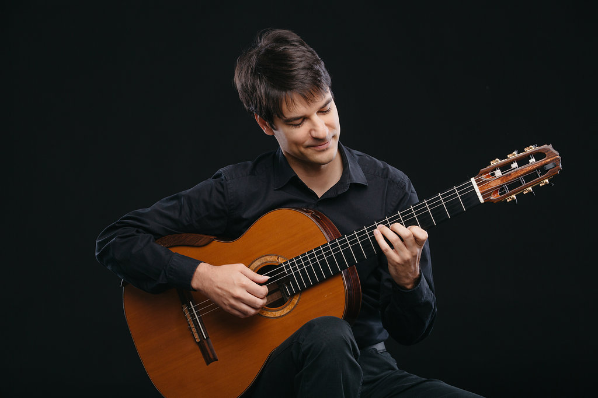

For further videos, please visit my channel:
About Me
Bio - en
Bio - hu
Photos
Bio
András Csáki was born in Budapest 1981, and began to play the guitar at the age of 11. He graduated at the Liszt Ferenc Academy of Music with honor in 2007. In 2012/2013 he pursued graduate studies in the University of Southern California as a student of Scott Tennant. He received his Doctorate degree in 2014 at the Liszt Ferenc Academy of Music.
Since 1995 András has been a regular participant of international master classes all over the world, including master classes held by Manuel Barrueco, Leo Brouwer, Abel Carlevaro, Costas Cotsiolis, David Russell, Angel and Pepe Romero.
Until the year of 2011 he received 24 prizes, among others he was awarded with the first prize in the 51st Tokyo International Guitar Competition in 2008, and in the 42nd "Michele Pittaluga" Guitar Competition in Alessandria, Italy 2009, Julian Arcas Guitar Competition, Spain 2011.
Besides solo recitals, he is also devoted to chamber music. He has had several opportunities to play guitar concertos with symphonic orchestras in Hungary and abroad.
He has frequently been asked to give master classes in various countries, such as China, Estonia, France, Great Britain, Greece, India, Romania, Russia, USA and his native Hungary.

Életrajz
Tanulmányok
1996–2000: Bartók Béla Zeneművészeti Szakközépiskola és Gimnázium (tanár: Szilvágyi
Sándor)
2000–2002: Győr, Zeneművészeti Főiskola (tanár: Roth Ede, Arnóth Balázs)
2002–2007: Liszt Ferenc Zeneművészeti Egyetem – kitüntetéses diploma (tanár:Eötvös
József)
2007–2010: Zeneakadémia Doktori Iskolájának állami ösztöndíjas hallgatója
2011–2012 University of Southern California, Thornton School of Music hallgatója
(tanárai: Scott
Tennant, William Kannengiser, Pepe Romero)
2014-ben DLA fokozatot szerzett a Liszt Ferenc Zeneművészeti Egyetemen
Mesterkurzusok
1995-től aktív résztvevője a hazai és nemzetközi mesterkurzusoknak. Többek között részt vett Odair Assad, Manuel Barrueco, Leo Brouwer, Abel Carlevaro, Costas Cotsiolis, Aniello Desiderio, Zoran Dukic, Pablo Marquez, Thomas Müller-Pering, Judicaël Perroy, Angel Romero, Pepe Romero, David Russell, Kováts Barna és Vásáry Tamás mesterkurzusain.
Oktatói tevékenység
2005–2014: Bartók Béla Zeneművészeti Szakközépiskola és Gimnázium
2009- : Liszt Ferenc Zeneművészeti Egyetem
2011–2020: Szegedi Tudományegyetem Zeneművészeti Kar
2021-ben habilitált a Liszt Ferenc Zeneművészeti Egyetemen
Rendszeresen tart módszertani továbbképzéseket és gitárkurzusokat a hazai felsőfokú- és középfokú intézményekben, illetve a hazai nemzetközi gitárfesztiválokon és kurzusokon. Első nemzetközi mesterkurzusát 2005-ben tartotta az Egyesült Államokban (Dallasban). Azóta rendszeresen felkérik nemzetközi gitárkurzusok tartására. Tanított már - az Egyesült Államokon kívül – Angliában, Ausztráliában, Csehországban, Szlovákiában, Franciaországban, Görögországban, Izraelben, Kínában, Lengyelországban, Németországban, Romániában, Oroszországban, Spanyolországban, Ukrajnában és Vietnámban.
Bemutatók & hangversenyek
Koncertezett többek között Angliában, Ausztráliában, Ausztriában, Bosznia-Hercegovinában, Csehországban, Chilében, az Egyesült Államokban, Franciaországban, Görögországban, Grúziában, Indiában, Izraelben, Japánban, Kínában, Lengyelországban, Montenegróban, Norvégiában, Olaszországban, Oroszországban, Spanyolországban, Romániában, Szerbiában, Szlovákiában, Ukrajnában, Venezuelában és Vietnámban. Korosztályának egyik legaktívabb magyar klasszikusgitárosaként versenyművek és kamaraprodukciók előadója idehaza és külföldön. Szólistaként játszott szinte valamennyi neves magyar-, valamint számos neves külföldi szimfonikus és kamarazenekarral. Dolgozott itthon és külföldön ismert és elismert karmesterekkel. Gitárosként gyakran és szívesen vállalkozik XX. századi és kortárs szerzők műveinek előadására, bemutatására.
A koncertekről részletesen lásd itt: mtmt.hu
Lemezfelvételek
2009-ben elkészítette első önálló CD lemezét "My Favourite Pieces", ("Kedvenc
darabjaim")
címmel. A szóló lemezen Bach, Giuliani, Barrios, Morel, Farkas és Castelnuovo-Tedesco
művei
csendülnek fel.
2010-ben Kanadában, Norbert Kraft zenei vezetésével készült el második szólólemeze a
Naxos
Classic "Versenygyőztesek" sorozatában. A nagy sikerű "Guitar Recital" c. lemezen Bach,
Britten,
Duarte és Castelnuovo-Tedesco darabokat játszik. A CD-je műsorából két mű is bekerült
Enrique
Robichaud kanadai zenetudós Guitar’s Top 100 című könyvébe.
2012-ben a spanyol a Julian Arcas Nemzetközi Gitárverseny győzteseként készíthette el
spanyol
műveket tartalmazó lemezét. Ezen Francisco Tarrega, Isaac Albéniz, Joaquín Rodrigo,
Enrique
Granados, Joaquín Turina, Joaquín Malats és Frederico Moreno Torroba darabját
szólaltatja
meg.
2015-ben, az Ágai Karola és Szendrey-Karper László Emlékérem első gitárművész
kitüntetettjeként
készíthette el Bach lemezét, ami Bach négy lantszvitjét tartalmazza: g-moll szvit, BWV
995
(a-mollban), e-moll szvit, BWV 996, c-moll szvit, BWV 997 és E-dúr szvit, BWV 1006a.
2021-ben a Nemzeti Kulturális Alap támogatásával jelent meg a Hungarian and Spanish
Sonatas
from
the 20th Century (In Memoriam Sándor Szilvágyi) c. lemeze. Ezen Rózsa Miklós: Sonata for
Guitar
Op. 42, Farkas Ferenc: Sonata per chiatara sola, Kovács Barna: Sonata Nova és Antonio
Jose:
Sonata para guitara c. műveit játssza.
Nemzetközi versenyeken elért első helyezések
2011: XII. Julián Arcas Nemzetközi Gitárverseny (Almeria, Spanyolország)
2010: Nikita Koshkin Nemzetközi Gitárverseny (Kalkutta, India)
2009: 42. Michele Pittaluga Nemzetközi Gitárverseny (Alessandria, Olaszország)
2008: 51. Tokiói Nemzetközi Gitárverseny (Tokió, Japán)
2005: X. Forum Gitarre Wien Nemzetközi Gitárverseny (Bécs, Ausztria)
2005: XXXV. International Jeunesses Musicales (Belgrád, Szerbia-Montenegro)
2004: J. E. Jurkowski Nemzetközi Gitárverseny (Tychy, Lengyelország)
2004: John Duarte Nemzetközi Gitárverseny (Rust, Ausztria)
2003: Johann Kaspar Mertz Nemzetközi Gitárversenyen (Pozsony, Szlovákia)
1999: XXVI. Dr. Luis Sigall Nemzetközi Zenei Verseny (Vina del Mar, Chile)
1999: IV. Anna Amalia Nemzetközi Ifjúsági Gitárverseny (Weimar, Németország)
Nemzetközi versenyeken elért második helyezések
2011: 45. Francesco Tárrega Nemzetközi Gitárverseny (Benicassim, Spanyolország)
2011: XXIX. GFA Nemzetközi Előadóművész Verseny (Columbus/Georgia, USA)
2010:18. Hubert Käppel Nemzetközi Gitárverseny (Koblenz, Németország)
2009: X. Julián Arcas Nemzetközi Gitárverseny (Almeria, Spanyolország)
2008: Printemps de la Guitare Nemzetközi Gitárverseny (Charleroi, Belgium)
2007: Heinsberg Nemzetközi Gitárversenyen (Heinsberg, Németország)
2007: I. Horváth Nemzetközi Gitárverseny (Split, Horvátország)
2006: Karl Scheit Nemzetközi Gitárversenyen (Bécs, Ausztria)
2005: 38. Michele Pittaluga Nemzetközi Gitárverseny (Alessandria, Olaszország)
1997: Szendrey-Karper László Nemzetközi Gitárverseny (Esztergom, Magyarország)
Díjak, ösztöndíjak, kitüntetések
2008, 2009 és 2010: Fischer Annie ösztöndíj
2009: Duna Televízió "Magyar Csillagok" díja,
2009: Prima Primissima Alapítvány Junior Prima zeneművészeti díja
2010: Márciusi Ifjak Díj
2015: Ágai Karola és Szendrey-Karper László Emlékérem
2021: MMA zeneművészeti ösztöndíj
2022: Liszt-Ferenc-díj





My Music
Videos
Audio
CDs
20th Century Sonatas
Miklós Rózsa
Ferenc Farkas
Barna Kováts
Antonio Jose
Bach Lute Suites
BWV 995
BWV 996
BWV 997
BWV 1006a

Spanish Pieces
Tárrega
Albéniz
Rodrigo
Granados
Turina
Malats
Torroba

Naxos Laureate Series
Bach
Britten
Duarte
Castelnuovo-Tedesco
My Favourite Pieces
Bach
Giuliani
Barrios
Morel
Ferenc Farkas
Tedesco
Upcoming Concerts
Harmonia Cordis International Guitar Festival
Targu Mures
2023.08.08-13.
Bach Lute Suites
Budapest Music Academy Solti Hall
2023.10.04
Láng István: Concitato
Budapest "Mini Fesztivál"
2023.10.12